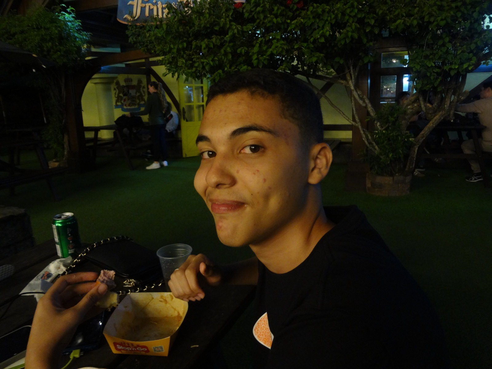
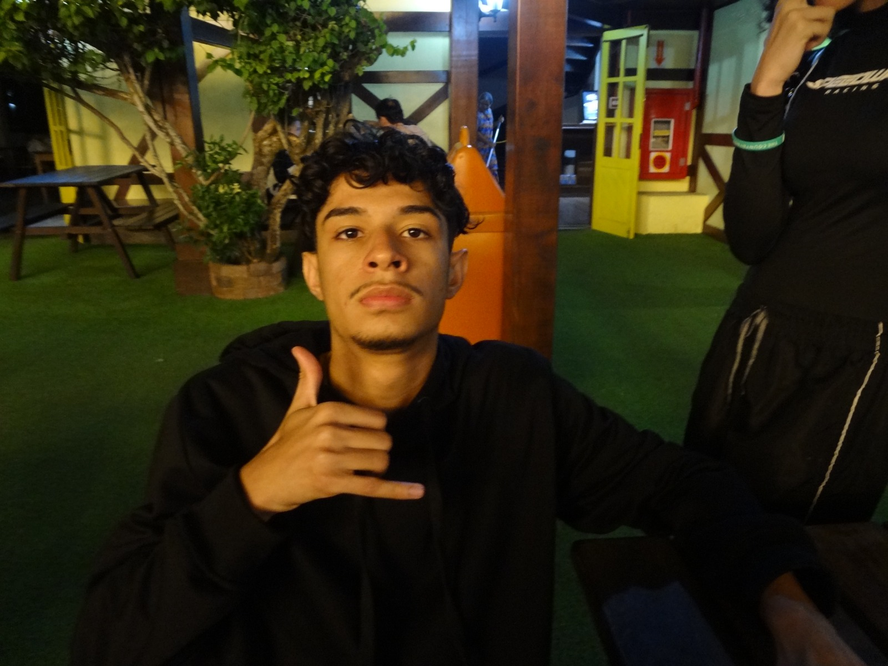
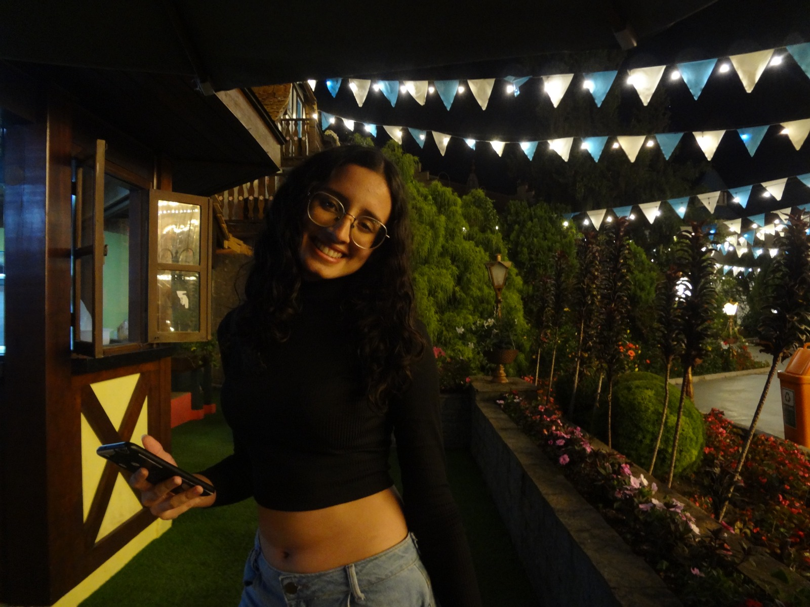
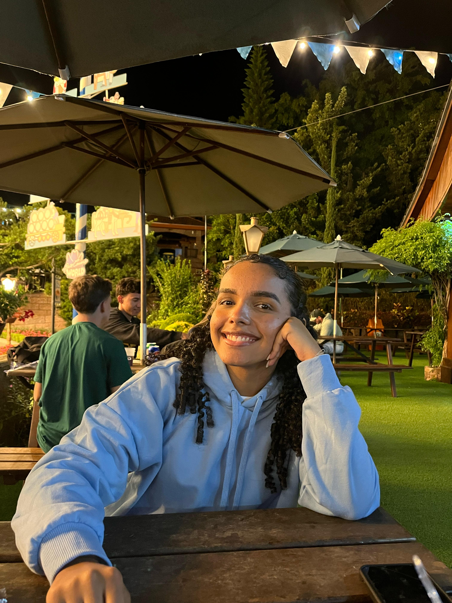
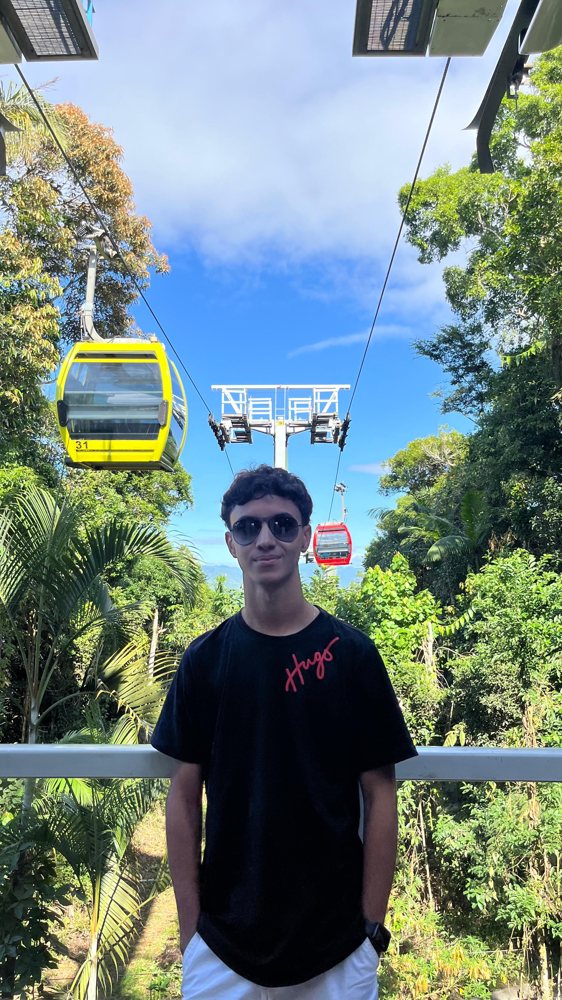
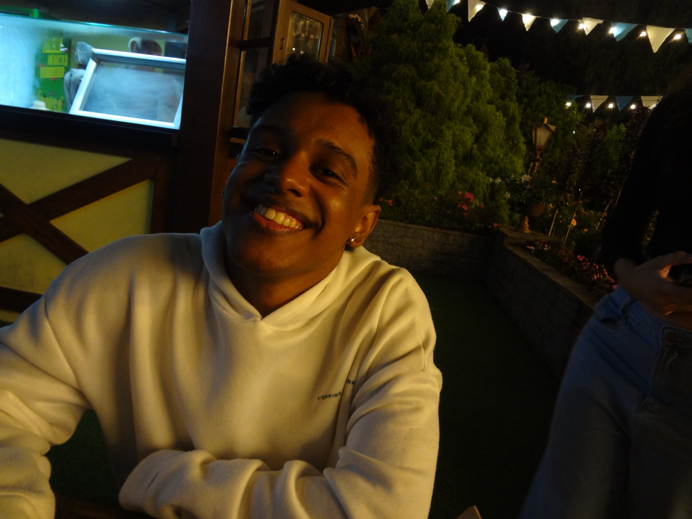

Amigos

Júlio
O amigo verdadeiro que sempre vai ser sincero hahaha

Lucas
Como todos falam: "tinha que ser o Lucas 🙄"

Alê
O sorriso mais contagiante que eu conheço

Manu
A amiga que sempre está me ajudando em tudo, até nos momentos difíceis

Aninha
Minha irmã quase gêmea 💗

Rafa
O galã++ do grupo hahah

Nathan
O irmãozão que mesmo de longe continua presente. Sempre pronto pra rir, apoiar e ser luz nos dias difíceis.